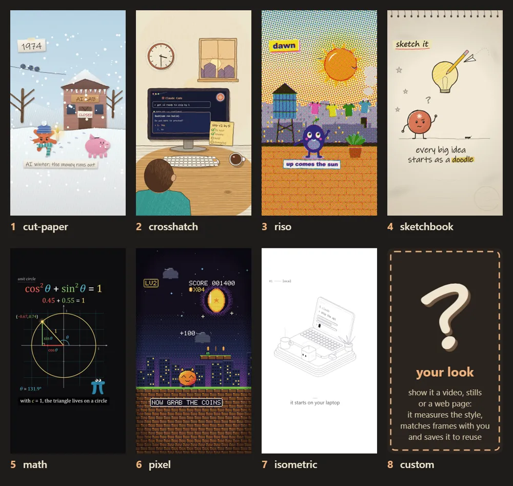
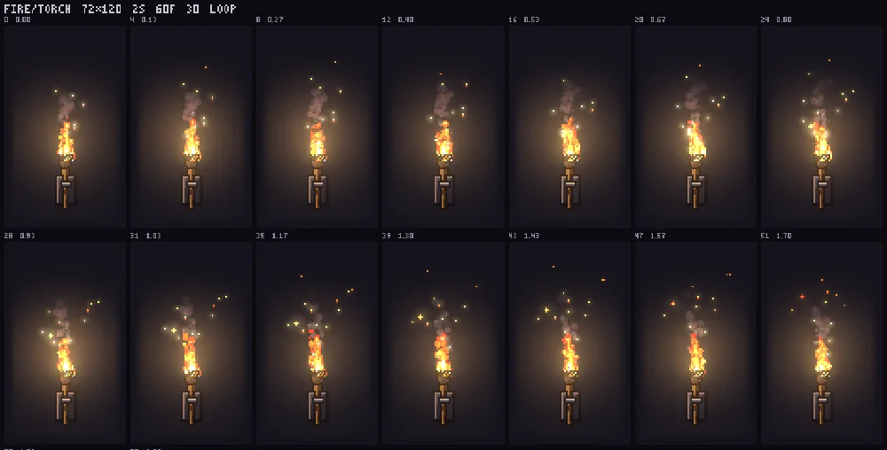

Em vez de explicar o processo a cada conversa, você instala uma pasta com as instruções e as ferramentas. Depois é só pedir o vídeo em uma frase. Esta página mostra o que é, como instalar com segurança e como usar as três que testamos.
Dentro dela há um arquivo de instruções, o SKILL.md, e muitas vezes scripts que o Claude roda. Nada mais.
Fica em um lugar fixo
Na pasta .claude/skills do projeto, para valer só ali, ou na pasta .claude/skills do seu usuário, para valer em tudo.
Você chama pedindo
Não há botão. O Claude Code lê a lista de skills ao abrir a conversa e usa a certa quando o seu pedido combina com ela.
Skills funcionam no Claude Code. Por isso este pacote combina com os métodos médio e avançado. No método fácil, use os prompts mãe.
Como usar
Da instalação ao primeiro pedido
Avalie antes. Uma skill roda scripts no seu computador. Cole o Prompt S com o link do repositório: o Claude lê as instruções, os scripts e a licença e diz se vale instalar.
Instale. Por plugin, por instalador ou copiando a pasta. Os comandos de cada repositório estão na lista completa.
Instale o que a skill pede. Quase todas usam Node.js e FFmpeg. O animate pede também o Playwright, que abre um navegador invisível para tirar os quadros.
Abra uma conversa nova. A lista de skills é lida no começo da conversa. A que você acabou de instalar só aparece na próxima.
Peça em português. Diga o que quer e, se souber, o estilo. Exemplos de frases estão em cada cartão abaixo.
Responda nas paradas. Skills boas param para você aprovar a história e o visual antes de gastar tempo no vídeo inteiro.
Testadas por nós
Três skills instaladas e rodando
Lemos as instruções e os scripts de cada uma antes de instalar. Depois rodamos um teste pequeno. Ainda não fizemos um vídeo inteiro com o animate nem com o pixelfx.
animate
Faz vídeos curtos inteiros em código, com trilha, em sete estilos. Antes de animar, ela para três vezes: na história, no visual e no storyboard.

O nosso teste: a galeria de estilos, gerada pela própria skill em poucos segundos. Os desenhos são dos exemplos do autor.
Como pedir
Faça um vídeo explicativo de 30 segundos sobre [ASSUNTO], no estilo riso, em 9:16.
pixelfx
Uma biblioteca de 244 efeitos em pixel art e o método para criar novos. A skill é só o manual: as ferramentas ficam em uma cópia do repositório, que você baixa ao lado do projeto.

O nosso teste: o efeito de tocha, renderizado em 60 quadros.
Como pedir
Use o pixelfx para criar um efeito de [EFEITO, por exemplo "portal roxo se abrindo"] e exporte como folha de sprites com fundo transparente.
Um aviso sobre o manual. As instruções do pixelfx mandam o Claude oferecer a publicação do seu jogo no site do autor. Ele só faz isso com o seu sim, e não se aplica a vídeo. Achamos justo você saber.
motion-prompt
Um catálogo de 240 nomes de movimentos, cada um com amostra, medidas de tempo e o jeito de pedir. Serve quando você sabe o efeito que quer, mas não sabe como ele se chama. A propaganda no início do guia usa quatro deles.
Abra a biblioteca do motion-prompt só com os movimentos de texto e de câmera. Eu escolho no navegador e você aplica as escolhas na abertura do meu vídeo.
Sobre o som. A trilha e os efeitos da propaganda foram compostos por código, nota por nota, sem nenhum arquivo de som de terceiros: cada tecla digitada, cada troca de cena e o acorde final caem no tempo da imagem. A narração é da ElevenLabs, em uma tomada só, com marcações de emoção no texto, e a música baixa sozinha enquanto a voz fala.
A lista completa
Oito repositórios para fazer vídeo com o Claude Code
Abrir o projeto de outra pessoa é o jeito mais rápido de encurtar caminho. Estes oito apareceram no GitHub com código e prompts abertos. Seis são skills que você instala no Claude Code. Dois são material de consulta, que você usa sem instalar nada.
Para produzir
animate
Vídeos curtos animados feitos inteiros em código, do desenho à trilha, com o mesmo resultado a cada render. Traz sete estilos prontos: papel recortado, hachura, risografia, caderno de esboço, matemática, pixel e isométrico. Também aprende um visual novo a partir das suas referências, e para em três pontos para você aprovar história, visual e storyboard.
Bom para. Explicativos e histórias curtas. É o parente mais próximo do Caminho B desta página.
Você pede um filme de lançamento de 30 segundos para o seu produto. O agente estuda o produto, mostra três direções e monta o vídeo com trilha composta por ele. Para corrigir, você aponta direto no quadro e ele mexe só naquele ponto.
Feita para vídeo curto educativo, no estilo que faz sucesso no Douyin, o TikTok da China. Você entrega o tema ou o texto pronto. Ela escolhe entre dois visuais, escreve a legenda, monta a tabela de planos e coloca os efeitos sonoros. Primeiro sai um trecho de uns 30 segundos, e o resto só é feito depois da sua aprovação.
Bom para. Ciência, psicologia e curiosidades explicadas com imagem.
Para vídeos narrados de história e biografia. Vai do tema ao roteiro, à voz, às imagens e ao rascunho pronto para abrir no Jianying, a versão chinesa do CapCut. Dá para usar só uma parte, como o roteiro ou o gancho, e entregar a sua própria gravação no lugar da voz sintética.
Bom para. Canais de história narrada com imagem parada e câmera lenta.
Ensina o Claude Code a fazer o primeiro corte de um vlog ou de uma aula no DaVinci Resolve: tira pausas e erros pela transcrição, mantém as imagens de apoio, coloca trilha, efeitos e legendas e exporta para o YouTube. O pacote traz só o método. Os scripts o Claude escreve com você, para a sua câmera e o seu projeto.
Bom para. Quem grava com rosto e perde horas no corte bruto.
Uma biblioteca com 244 efeitos em pixel art, cada um em um pedaço pequeno de código: fogo, explosão, magia, clima. A skill ensina o Claude a achar, usar, exportar e criar efeitos novos em um ciclo de desenhar, renderizar, olhar e refazer.
Bom para. Dar impacto a cenas de jogo, terror e fantasia sem gerador de imagem.
Quinze estilos de motion graphics, cada um com um filme de 10 segundos feito pelo Claude Opus 5.5 escrevendo código. O repositório publica o filme, as notas do estilo, o prompt completo e o código de todos. Até a trilha sonora é gerada por código.
Bom para. Escolher um estilo e ver como ele foi pedido, palavra por palavra.
Um catálogo de nomes para o que você quer pedir: movimentos de motion graphics, de câmera, transições, estilos de foto e de arte. Cada nome tem uma amostra em movimento, o significado em uma linha e um exemplo de pedido. No dia da nossa consulta eram 240 nomes em 10 conjuntos.
Bom para. Quando você sabe o efeito que quer, mas não sabe como ele se chama.
Os comandos com barra são digitados dentro do Claude Code. Os outros, no terminal.
Três formas de instalar, conforme o repositório
# 1. Plugin do Claude Code: pixelfx, animate e motion prompt
/plugin marketplace add patch-gg/pixelfx
/plugin install pixelfx@pixelfx
/plugin marketplace add cth9191/animate
/plugin install animate@animate
/plugin marketplace add showheyohtaki/motion-prompt
/plugin install motion-prompt@motion-prompt
# 2. Instalador de Agent Skills: huashu-motion
npx skills add alchaincyf/huashu-motion
# 3. Copiando a pasta: vibe-knowledge-film, story-studio e video-editor-skills
# Baixe o repositório e coloque a pasta da skill em .claude/skills/ dentro do projeto,
# ou em ~/.claude/skills/ para valer em todos os projetos.
Prompt S: avaliar uma skill antes de instalar
Uma skill é um conjunto de instruções e, muitas vezes, de scripts que rodam no seu computador. Vale ler antes. Este prompt faz o Claude ler por você e só instalar com o seu sim.
Troque o link pelo repositório que você quer avaliar
Quero avaliar esta skill antes de instalar: [LINK DO REPOSITÓRIO]
Não instale nem execute nada ainda.
1. Leia o README, o SKILL.md e a licença. Diga em 5 linhas o que a skill faz e o que ela exige: programas, chaves e serviços pagos.
2. Liste todo script que ela roda na minha máquina e tudo o que ela baixa ou envia para a internet.
3. Diga o que a licença permite: uso em canal monetizado, alteração e redistribuição.
4. Compare com o que já temos neste projeto e diga se vale instalar, só estudar ou ignorar.
Só instale depois de eu responder "pode instalar", e na pasta do projeto (.claude/skills), não na pasta global.
Duas licenças pedem atenção. O story-studio e o video-editor-skills são de uso não comercial. O segundo deixa claro que não pode ser vendido nem entrar em curso, modelo ou serviço pago. Se o seu canal é monetizado, leia a licença inteira ou fale com o autor antes de usar.
O que nós fizemos. Lemos o README e a licença dos oito repositórios em 24 de novembro de 2026. Instalamos e testamos três: animate, pixelfx e motion-prompt. Para os outros cinco, os números e os recursos são os que cada autor descreve. Repositórios mudam: confira antes de instalar.
Quer um formato só seu?
O método avançado mostra como transformar um vídeo aprovado em uma skill do seu canal.